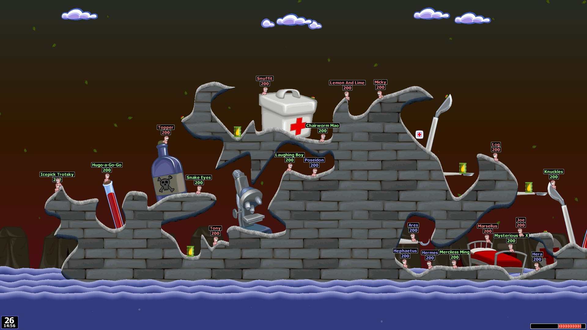
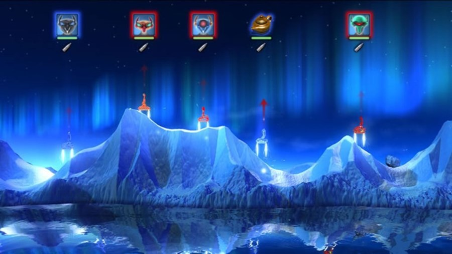
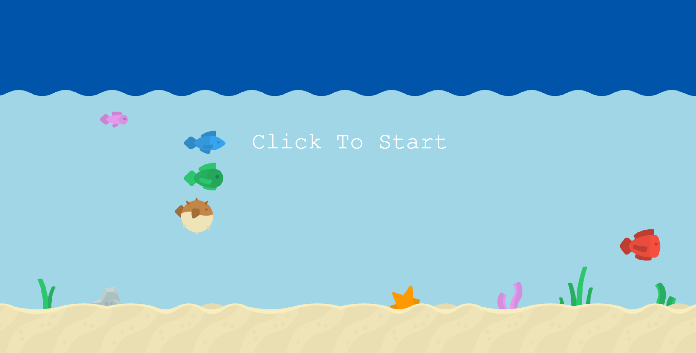
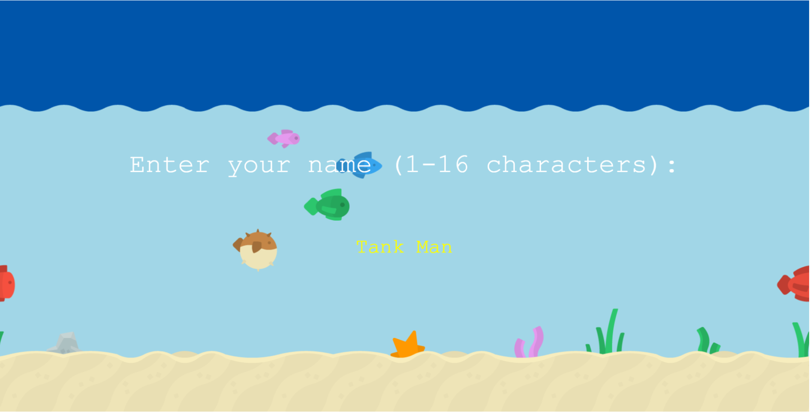
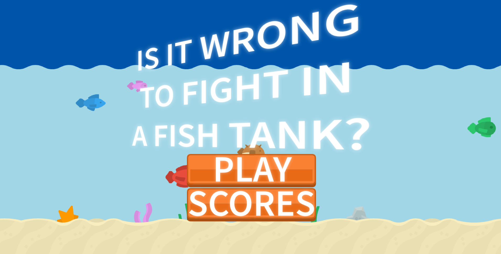
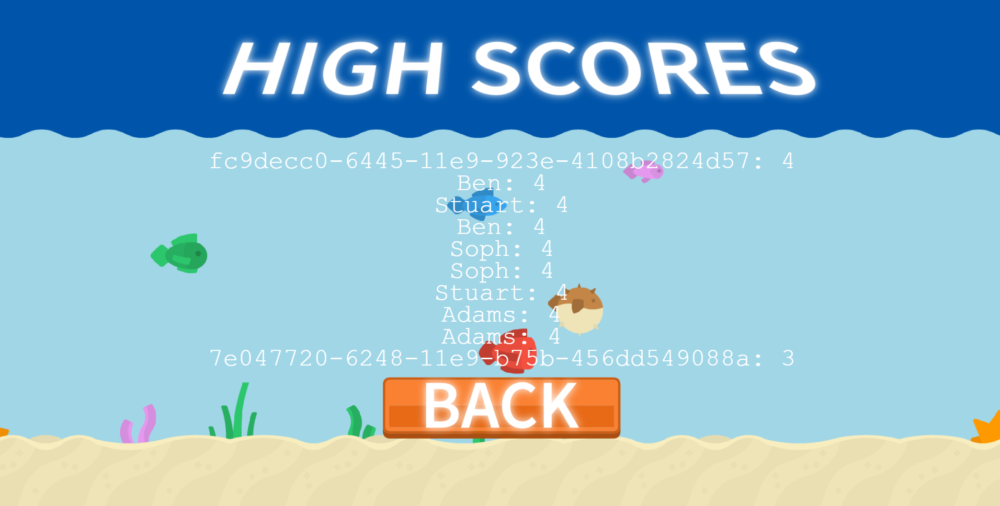
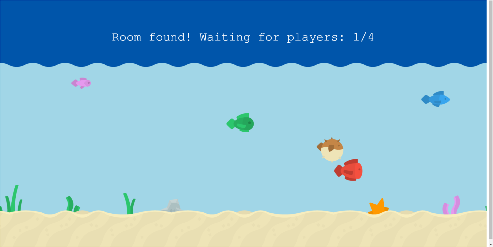
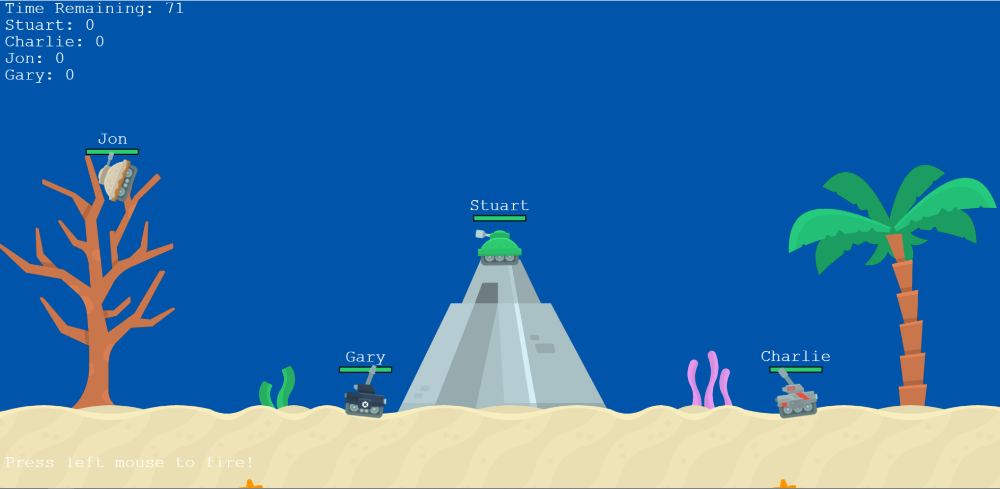
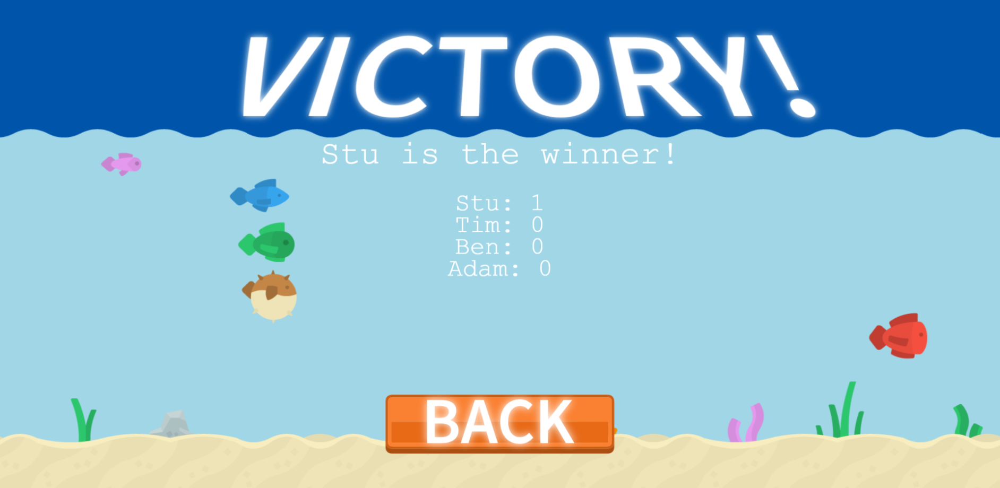

“Is It Wrong to Fight in a Fish Tank?” is an online multiplayer artillery game. Players control an underwater tank and are tasked with destroying all of the other players. There are 4 players in a match.
The game takes place in a fish tank, and is presented from a side-on perspective. Players control their tank using their mouse and keyboard to drive and fly around the level. Players can fire missiles that inflict damage on any player that lies within the explosion radius. When a player’s health reaches 0, they are killed and explode after a short period before reviving. Player’s gain score by eliminating other players and lose score if they destroy themselves. At the end of the match the winner is the player with the highest score.
The game concept borrows heavily from many games in the artillery game genre.
The Worms series is a pivotal influence on the game’s design, introducing many gameplay mechanics that it borrows. The Worms games are turn-based artillery games where each player controls a team of worms. Each player takes a turn to control one of their worms, and may use whatever tools and weapons they have to try and attack and kill the enemy’s team. Most weapons in the game are ballistic, such as the series’ staple weapon the Bazooka. Players can fire explosive projectiles that destroy the environment and damage any players within the explosion radius.
Death Tank is a 2D multiplayer game that takes the artillery-based gameplay of earlier titles, like Scorched Earth, and brings them to real-time. Terrain is also destructible, and eventually whittles down to a flat, indestructible plane. Unlike Worms, which puts emphasis on strategy through its many items and turn-based gameplay, Death Tank refocuses the artillery game to being about chaotic action.
Our game draws upon these two games by taking the light-hearted cartoon stylings of Worms and marrying it to the streamlined real-time gameplay of Death Tank.
The game world is a fish tank. Players control tanks operated by fish, an allusion to the well-known joke:
There’s two fish in a tank. One turns to the other and says ‘You man the guns, I’ll drive’.
The tanks are very small, and the environment is made up of the aquarium décor; decorative rocks, ornaments, gravel and plants. These objects can be destroyed in the combat.
The game does not feature any developed characters. Players control unnamed fish that are piloting the tanks.
The player’s tank is moved using the keyboard. W and D will move the tank left and right, while A makes the tank fly upwards. These controls are relative to the tank’s current current orientation. Q and E can be used to change the tank’s orientation. Q rotates the tank left, while E rotates the tank right. Gravity will slowly draw the player to the bottom of the world, but because the setting is underwater, gravity is more forgiving than typical artillery games.
The mouse can be used to aim and fire. The tank will aim towards the player’s current mouse position on the screen. Clicking the left mouse button will make the tank fire a missile in the current aim direction. The projectile will follow a parabolic arc as the initial force carries it in the target direction and gravity acts upon it. When the missile hits a solid object, it will explode, destroying the terrain it touches and damaging any nearby players.
The game features several menus and graphical interfaces. When the game starts, they are required to click the screen. This ensures that the game window is active and allows features like audio to start.
They are then asked to enter their player name. The name must be within 1 or 16 characters, names shorter or longer than this are not accepted.
When the player name is set, the main menu opens. The main menu allows players to join a game or look at the current high scores.
The high scores screen fetches the top 10 high scores from the server and lists them in order.
Joining a game will open a waiting screen that shows the number of players needed to join before a match can begin.
When four players join, the game begins. The main game screen shows the game world and the players. Players’ names and health are shown above their tanks in world space. In screen space, the remaining time, player scores and player abilities are shown. When the timer reaches its end, the game ends.
If a player has emerged with more points than the rest of the players, a Victory screen is shown, congratulating the winner. If players have equal scores, a Draw screen is shown. Both screens break down the scores of all players and let the player go back to the main menu.
The game relies on both custom assets and creative commons artwork. All of the creative commons work has been sourced from Kenney.nl, an artist who provides free game assets. The asset packs used in this project are: